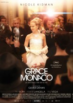

摩纳哥王妃格蕾丝·凯莉闻名于世的理由很多，绝世的美貌、奥斯卡影后、王子公主的婚姻、悲剧的命运。但等到一切喧嚣散尽，她铭刻在人们记忆中最多的还是那不曾在时光中陨灭的优雅以及时尚。但最被世人铭记的便是她那真人童话般的生活，一个生活在最好时代，也是最坏时代的王妃。这不是格蕾丝·凯利的小时代，而是她的大时代，也是《摩纳哥王妃》所讲的事情。或许本片作为一部传记电影并不是一部完美的作品，但作为一部描写王妃的电影，电影拍出了格蕾丝·凯利最美、最大气的瞬间。假如有人问我有没有一部电影能表现女性最美的时刻，看这部就可以了。
格蕾丝·凯莉，1929年11月12日出生于费城，曾是阿尔弗雷德·希区柯克的御用女演员之一，接连主演了他的3部作品：1953年的《电话谋杀案》、1954年的《后窗》以及1955年的《捉贼记》。1956年她凭借《乡下姑娘》一片获得奥斯卡最佳女主角奖，随后便息影，嫁给了一位王子。这样颇具童话色彩的经历有完全有拍成电影的可能，这个颇具戏剧性的人生剧本乃是商业电影的标准配置，不过《摩纳哥王妃》并没有将格蕾丝·凯莉光彩的生涯搬上银幕，而是选取了其生活中相对跌宕的一段，也就是摩纳哥在上世纪60年代与法国的外交危机中，她扮演的那个具足轻重的角色。作为一国之母，她运用自己的聪明才智通过外交努力化解这一危机